Full-page screenshots may exceed the named viewport height. Controlled fixtures are labeled separately from ordinary model-driven play. Click any image for its original size.
Real dealt hand; all three opponents remain concealed. Final interface.
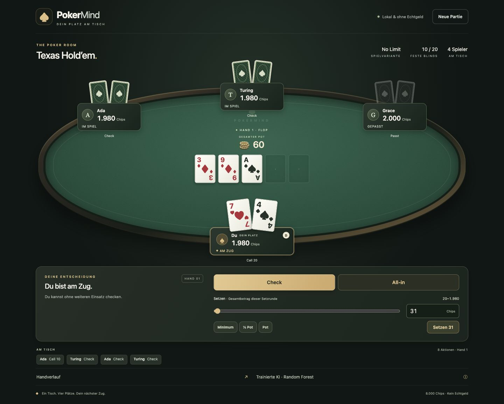
Actual arrow-key change to 31 chips. Visible focus outline.
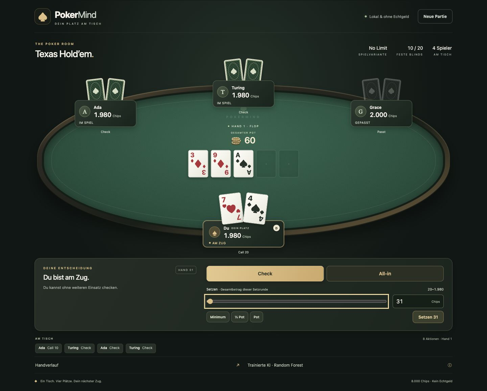
Controlled PokerKit fixture: four tied winners receive 20 chips each.
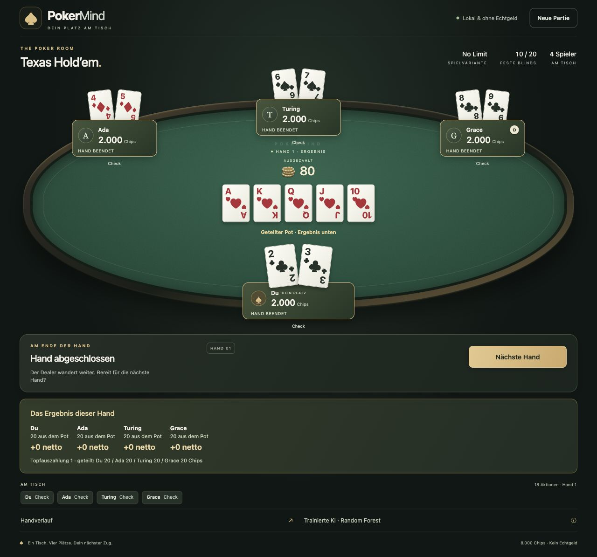
Controlled engine fixture, two opponents all-in; private cards remain masked.
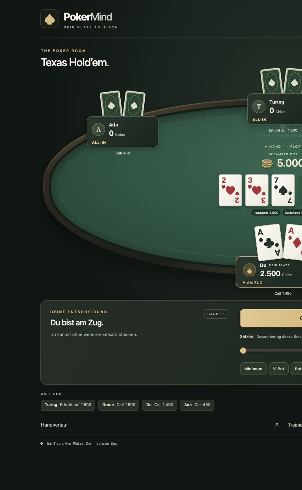
Controlled engine fixture, three genuine engine payout operations.
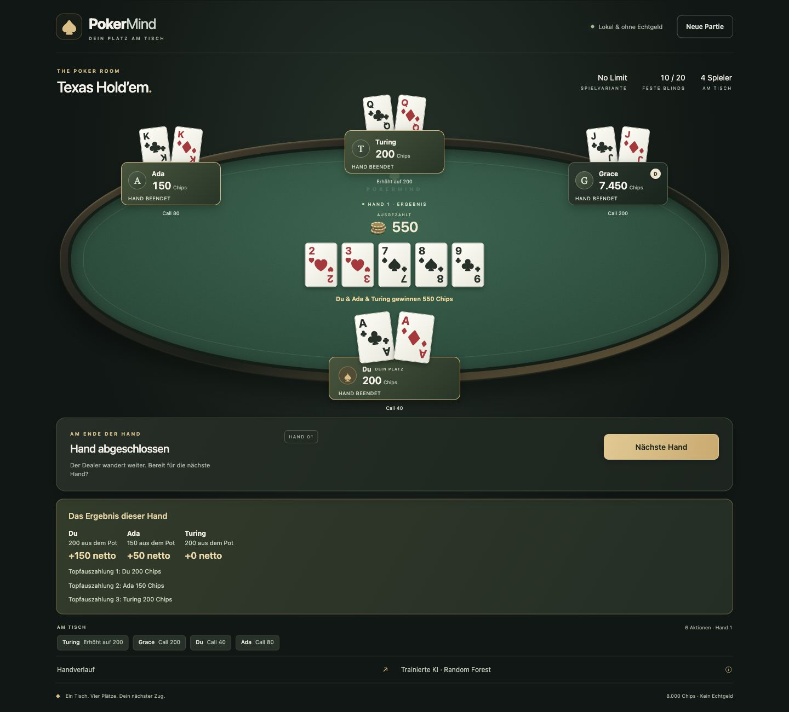
Final tablet layout; separate community and human cards.
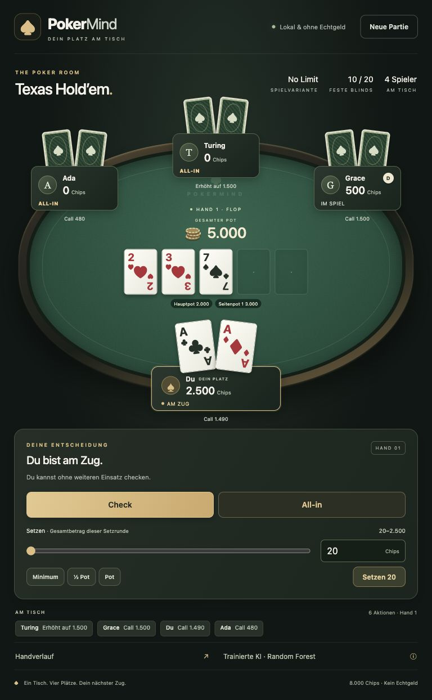
Controlled initial bankrolls; actual rules/learned policies.
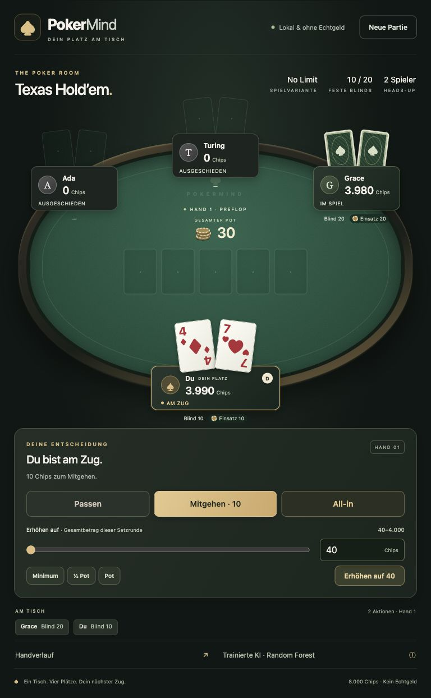
Final mobile sizing, reachable through ordinary vertical scrolling.
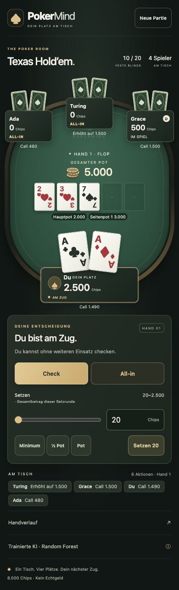
Real seeded hand after Call/Check/Check/Check; Ada receives 60 chips.
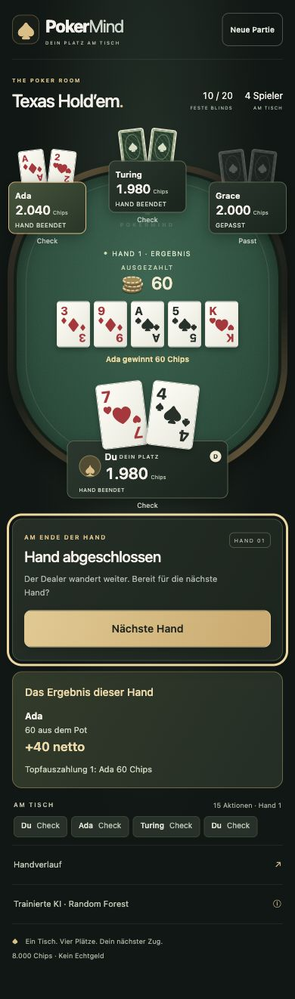
Controlled PokerKit fixture; 8,000 chips and no next-hand action.
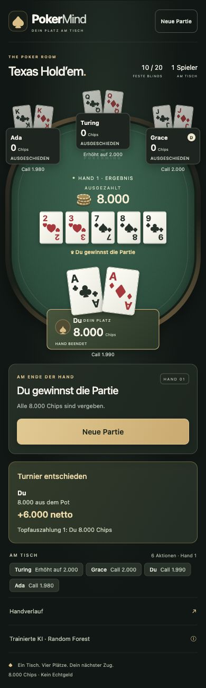
Explicit error-state fixture; clear message and reset available.
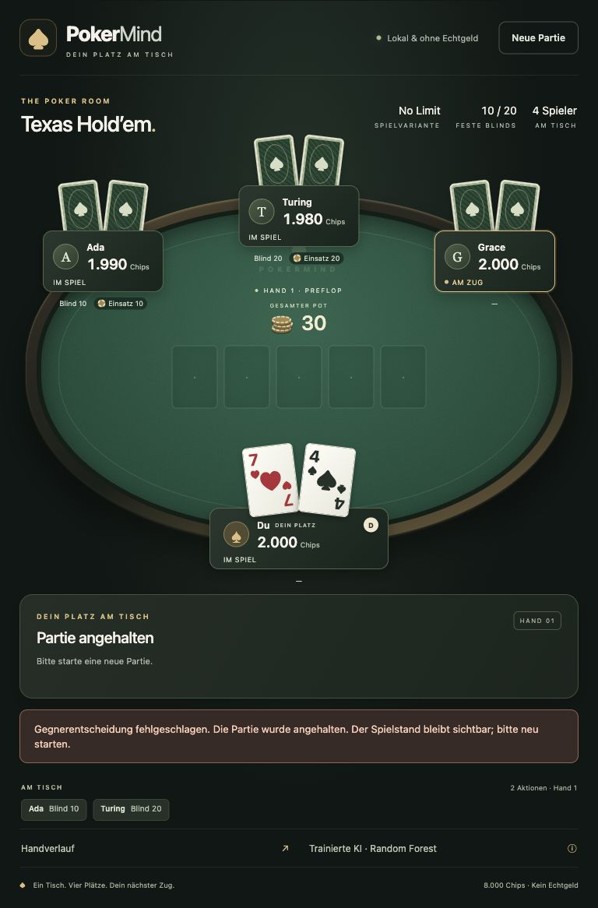
Server stopped before command, controls disabled, GET-only recovery tested.
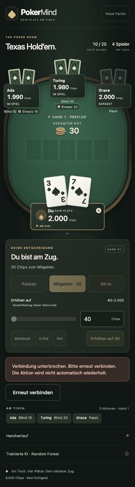
Native window capture, not CSS scaling. A real raise was executed via keyboard.
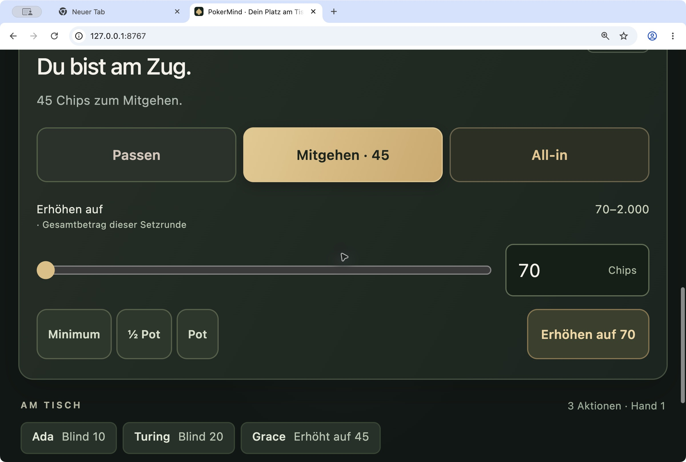
Real OS preference enabled during this check; disabled again afterward. Earlier acceptance capture, before final payout-label refinement.
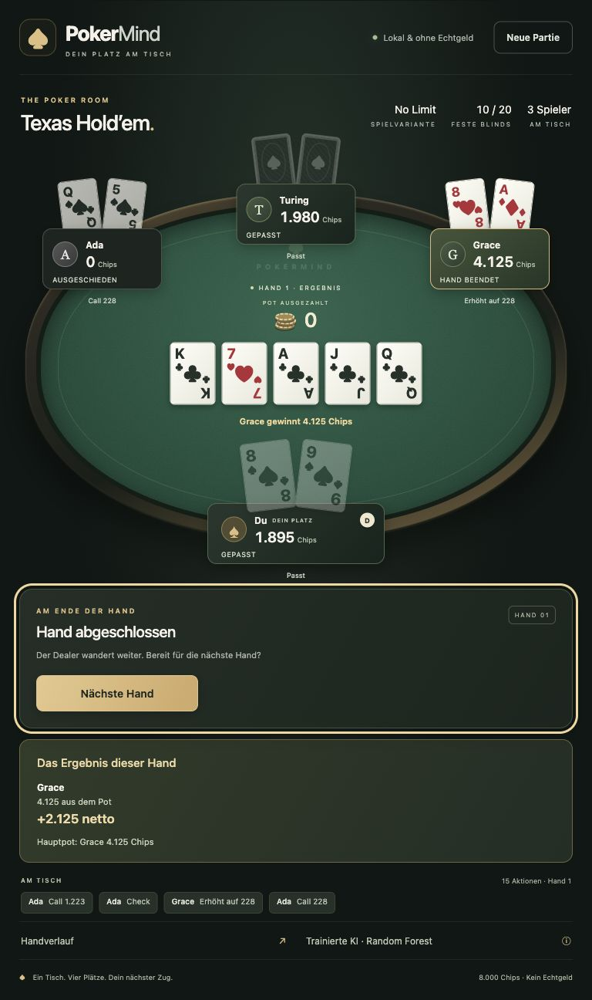
Earlier acceptance capture from the unseeded production flow; current final sizing is shown above.
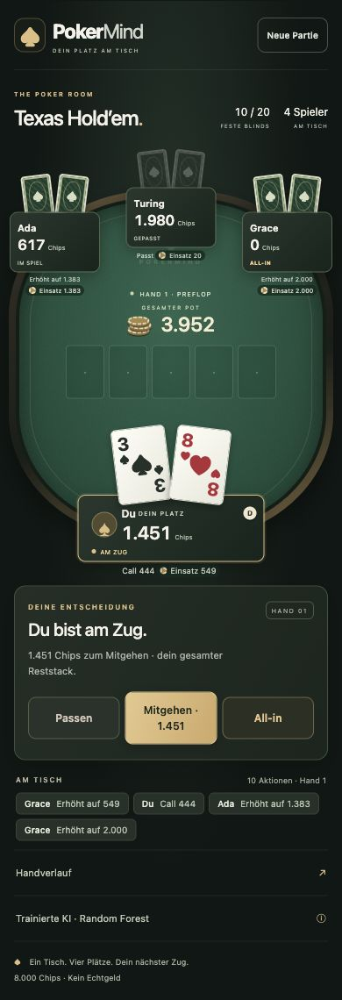
Earlier acceptance capture from the unseeded production flow. Final settled-pot labeling is shown above.
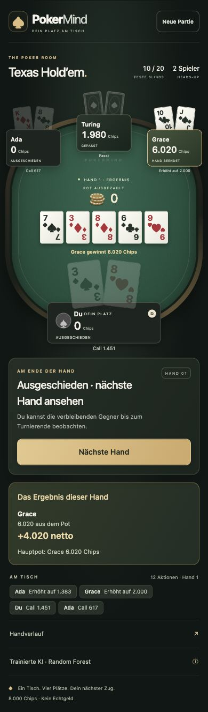
Genuine learned-mode showdown from the copied source and copied frozen model. Ada receives 4,020 chips; the human is eliminated.
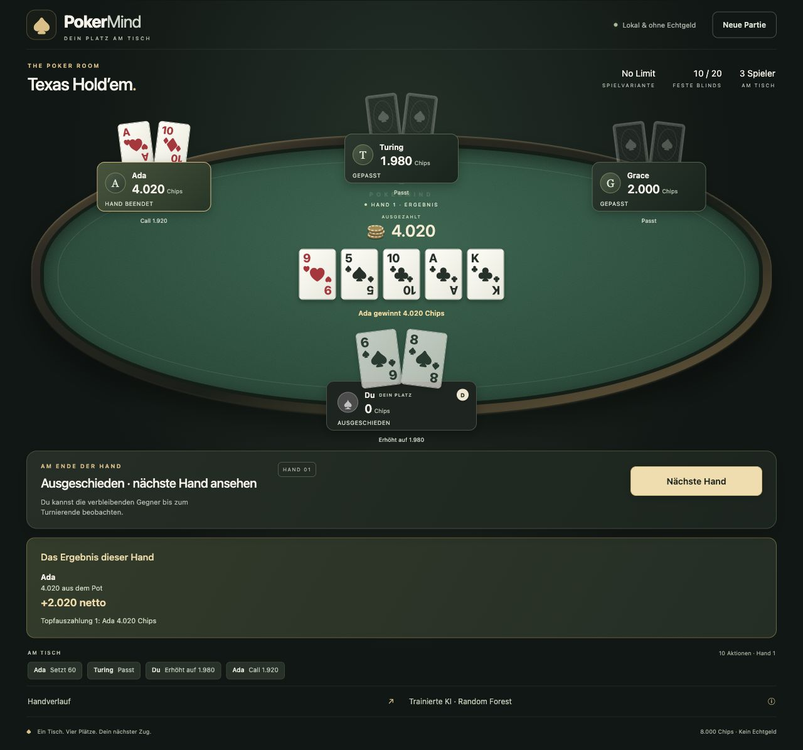